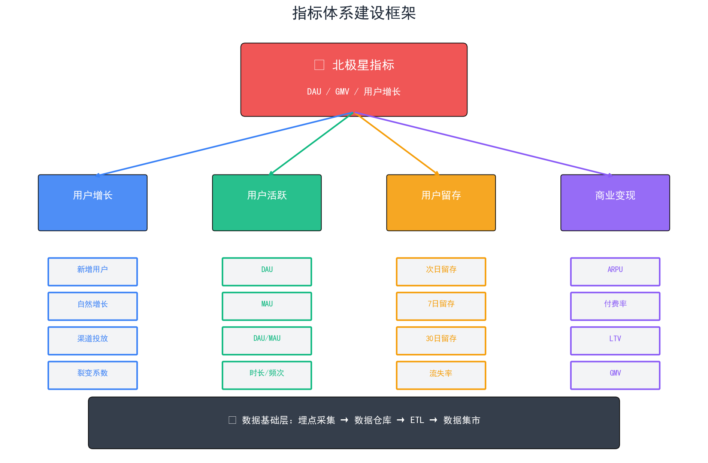
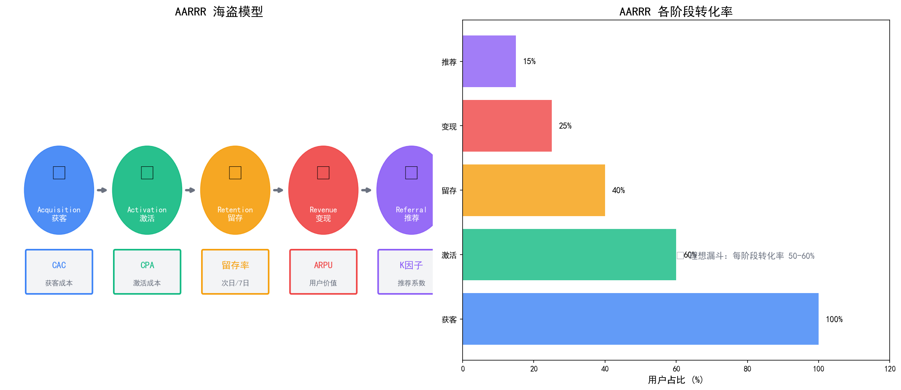
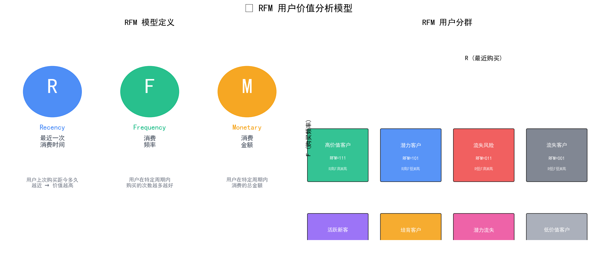
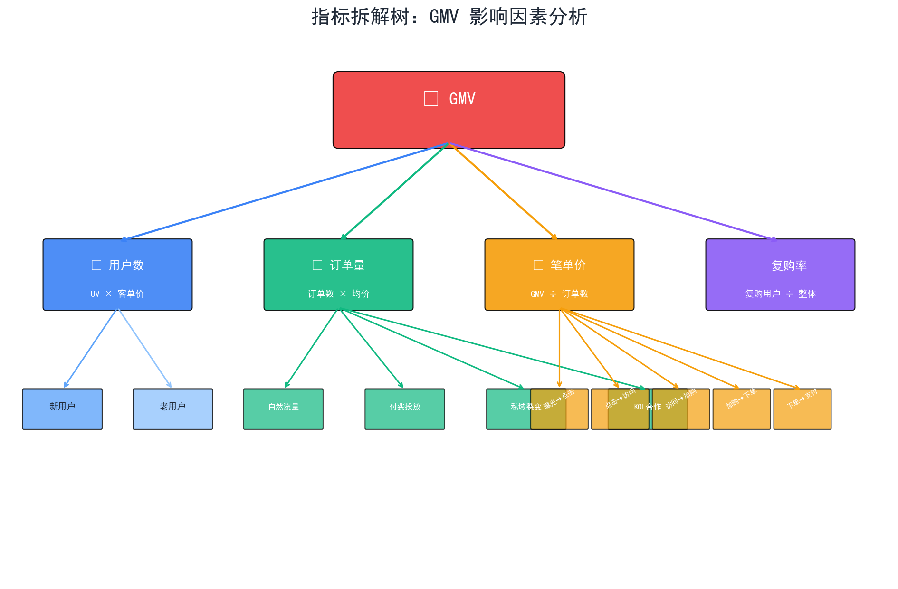
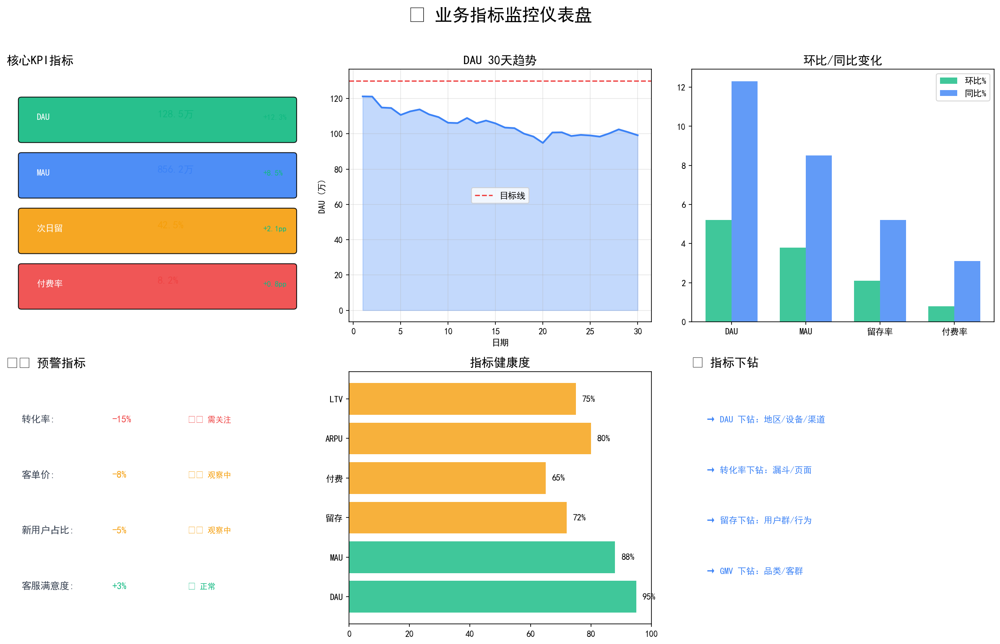
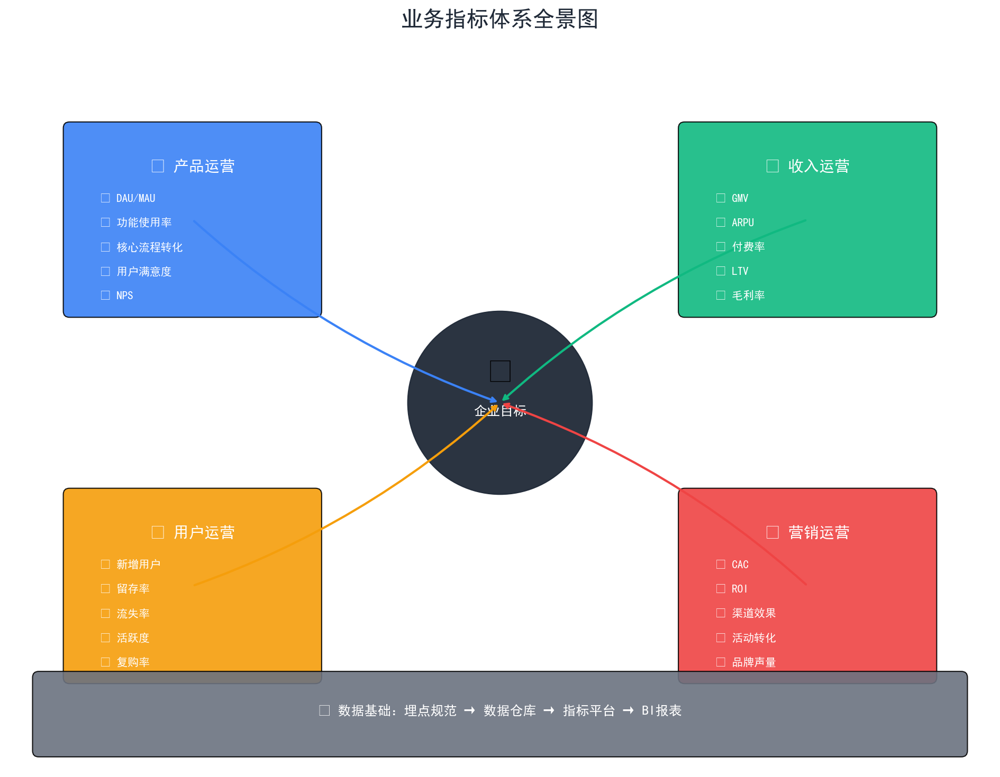

指标体系是数据驱动决策的基础，建议结合实际业务场景练习。
指标体系是公司战略落地、数据驱动决策的基础设施。 它将复杂的业务问题分解为可量化、可追踪的指标，帮助团队聚焦目标、发现问题。
🌟 北极星指标 → 多维指标分支 → 具体指标项
埋点采集 → 数据仓库 → ETL → 数据集市

北极星指标（North Star Metric）是唯一能衡量产品成功与否的核心指标。 它像北极星一样，为团队指明方向。
北极星指标：日活用户（Daily Active Users）
北极星指标：预订间夜数（Booked Nights）
北极星指标：完成订单数（Rides Completed）
新增用户、自然增长、渠道投放、裂变系数
DAU、MAU、DAU/MAU、时长/频次
次日留存、7日留存、30日留存、流失率
ARPU、付费率、LTV、GMV
用户从哪来？如何获取新用户？
用户首次体验如何？是否完成关键行为？
用户是否回来？是否形成习惯？
如何从用户赚钱？商业模式是什么？
用户是否推荐他人？如何实现裂变？

= 总营销费用 / 新增用户数
= 渠道成本 / 激活用户数
= 第N日留存用户 / 首日用户 × 100%
= 总收入 / 活跃用户数
用户上次购买距今多久，越近价值越高
用户在特定周期内购买的次数越多越好
用户在特定周期内消费的总金额

从北极星指标出发，逐层拆解影响因素， 找到问题的根本原因。

= 新用户UV + 老用户UV
= (自然流量 + 投放流量 + 私域流量)UV
= 曝光点击率 × 访问加购率 × 加购下单率 × 下单支付率
= 平均商品数 × 平均商品单价
选择最能衡量产品成功的核心指标
找到北极星指标的数学表达式
确定影响公式的主要因素
继续拆解到可操作的最小粒度
确保拆解的因子有因果关系
以"DAU"为北极星，拆解影响因素

清晰明了，一眼看出是什么指标
实时更新，展示最新数据
同比/环比，标注变化百分比
离目标多远，还需多少努力
偏离目标5-10%，需要关注
偏离目标>10%，需要立即处理
连续3天下滑，自动触发预警
DAU/MAU/功能使用率/满意度/NPS
GMV/ARPU/付费率/LTV/毛利率
新增/留存/流失/活跃/复购
CAC/ROI/渠道效果/品牌声量

建立指标字典，统一管理所有指标定义
为任意产品定义北极星指标并构建指标体系
使用SQL实现RFM用户分群
如何建立指标预警机制？